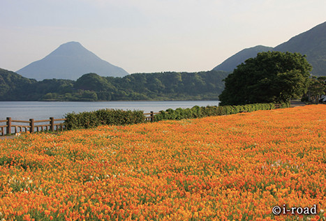
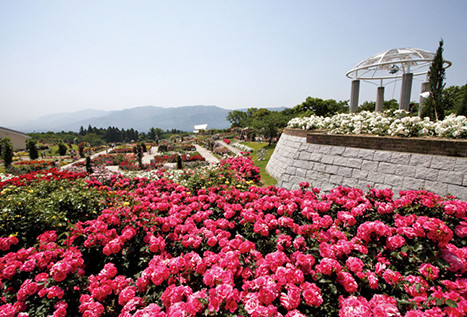
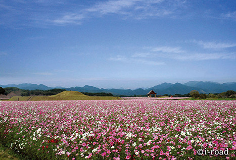
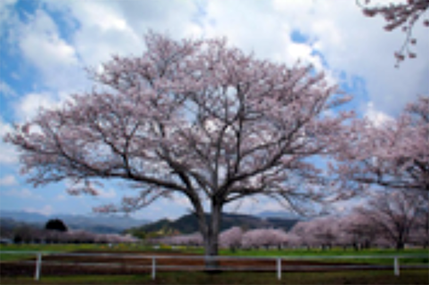
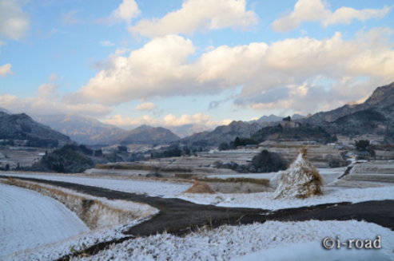
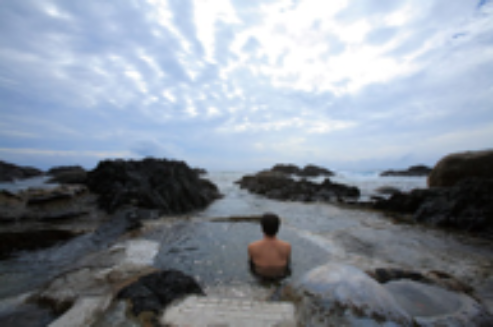

Seasons in Kyushu
Located in the southwestern part of Japan, Kyushu is relatively warm throughout the year compared to other regions in Japan. Therefore, it has abundant blessings of nature, including great food ingredients. Each area of Kyushu has its unique food items. There are also many places you can enjoy sports and leisure activities, as well as great sightseeing spots where you can enjoy a variety of beautiful flowers throughout the year.
Bright green color starts to spread across the mountains in spring, and the color darkens and colorful flowers start to bloom as summer approaches. Spring and early summer bring many visitors who come to see cherry blossoms, field mustard flowers, and azaleas. In summer, you can enjoy various water activities, including surfing, scuba diving, and river rafting, along with beautiful roses.
-

Mt. Kaimondake and poppies at Lake Ikeda
-

Kanoya Rose Garden
-

Autumn at Saitobaru Burial Mounds
-

Cherry trees at Aya Equestrian Park
In autumn, which is “the season of good appetite,” you can enjoy many delicious local products, including fruit and seafood. It is also the best time to view beautiful cosmoses at highlands in Kyushu.
Winter in Kyushu is relatively warm, so you can enjoy sports and flowers as much as during the other seasons. After a day of activities there is nothing better than relaxing in "onsen" hot springs. Hot springs in Kyushu have different water qualities and effects. There are "onsen" where you will feel like you are swimming in the ocean, where you can take a bath while admiring the starry sky or enjoy a stunning view surrounded by nature that will make you feel on top of the world. Kyushu Central Mountains, located in the center of Kyushu, sit at high altitudes and have low temperatures. Therefore, the area is covered with snow in winter, attracting many tourists who come for skiing and snowboarding.
-

Terraced rice fields covered with snow in Takachiho
-

Hirauchi seaside hotsprings in Yakushima